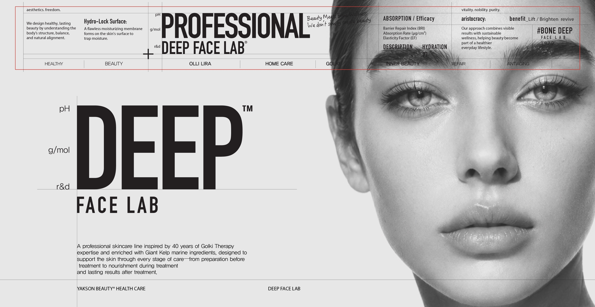
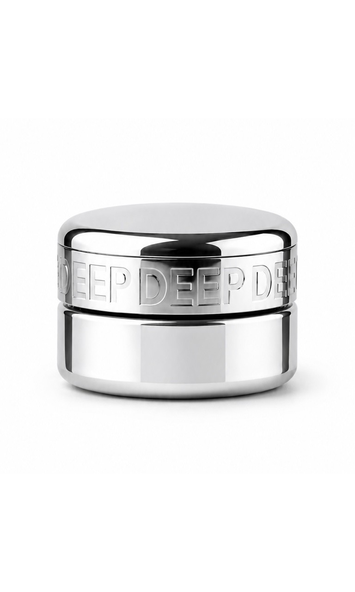
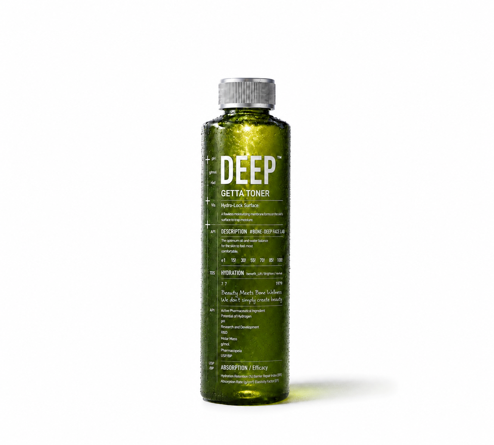
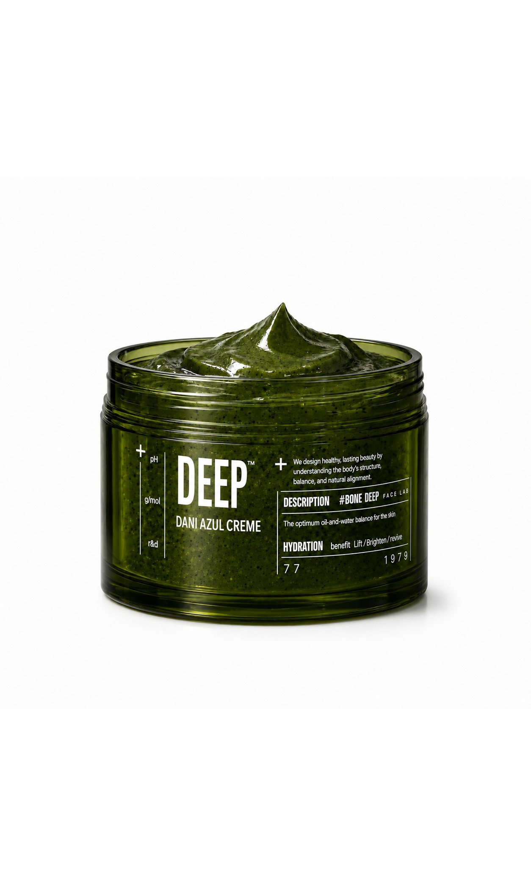
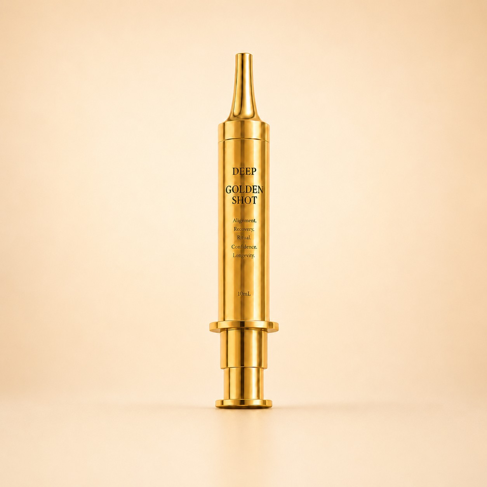

REFINED INTO SKINCARE.
과학적 스킨케어로 완성하다.
40년 동안 골기 테라피는 얼굴을 단순히 누르는 기술이 아니라
피부와 손, 압력과 흐름 사이의 균형을 연구해 왔습니다.
DEEP FACE LAB은 오랜 관리 경험 속에서 발견한 피부의 변화를
현대적인 해양 성분과 활성 성분 기술로 발전시켰습니다.
관리 전 피부를 준비하고, 필요한 에너지를 채우며,
관리 후 달라진 피부 컨디션을 편안하게 지키는 것.
이것이 DEEP FACE LAB이 스킨케어를 설계하는 방식입니다.
활성화하고, 회복시키고,
보호합니다.
40년 골기 테라피의 관리 원리와
Giant Kelp 유래 해양 성분을 바탕으로
피부를 관리 전부터 관리 후까지 단계적으로
케어하는 프로페셔널 스킨케어 라인입니다.
피부 표면을 정돈하는 부스터 토너부터
안색과 탄력을 집중적으로 관리하는 두 가지 앰플,
관리 후 열감과 붓기를 진정시키는 아줄 젤 크림,
수분과 유효 성분을 보호하는 리라 크림까지
하나의 완성된 리추얼을 제공합니다.
단 50ml에 고농축 융합시키다.
해양 성분과 항산화·탄력·장벽 케어 기술을 정교하게
결합한 DEEP의 최상위 토털 안티에이징 크림.
고농축 멜팅 밤 텍스처가 피부에 밀착되어
복합적인 피부 노화 징후를 집중적으로 관리하고
탄탄한 밀도, 매끄러운 피부결과 깊은 윤광을 완성합니다.
리라 크림이 골기 관리 후 피부에 채운 것을 지키는 크림이라면,
리라 슈프림 크림은 50ml의 고농축 포뮬러로 피부의
탄력·밀도·안색·장벽을 총체적으로 관리하는 최상위 안티에이징 크림입니다.


깨우는 첫 번째 부스터 토너
GETTA
세안 후 남아 있는 노폐물과 묵은 각질을 정돈해
거칠고 칙칙해진 피부결을 매끄럽게 가꾸고,
수분을 공급해 피부를 촉촉하고 유연하게 깨웁니다.
다음 단계의 앰플과 유효 성분이 고르게 밀착될 수 있도록
피부 환경을 준비하는 2-Way 부스터 토너입니다.
집중 관리하는
슈퍼 항산화 비타민 앰플
NEYO
순수 비타민 15%, 비타민 E 1%, 페룰릭 애시드 0.5%를 고농축 배합해
산화 스트레스로 인한 피부 노화 징후를 집중적으로 관리합니다.
칙칙한 안색과 색소침착, 잡티 흔적을 케어하고
피부톤을 맑고 균일하게 가꿔줍니다.


탄력의 밀도를 설계하는
골드 리프팅 앰플
SIYO
특허 공법을 통해 엑소좀 크기의 나노파티클과
콜라겐 신소재를 정교하게 결합했습니다.
탄력이 저하되고 느슨해 보이는 피부에 집중적인
탄력과 영양 케어를 제공해 밀도 있고 탄탄한 피부로 가꿔줍니다.
신소재를 결합한 피부 탄력 설계 시스템.
피부는 진정시키는
쿨링 리커버리 젤 크림
DANI
아줄렌과 다시마를 비롯한 해양 유래 성분을 담아
민감해진 피부를 편안하게 진정시키고 풍부한 수분을 공급합니다.
관리 후 올라온 피부 열감과 일시적인 붓기를 완화해 줍니다.

유효 성분을 멜팅하고
픽싱하는 고밀도 밤 크림
LIRA
40년 골기 관리 헤리티지를 바탕으로 설계한 고밀도 리커버리 크림입니다.
체온에 닿으면 부드럽게 멜팅되어 얼굴 굴곡에 유연하게 밀착되며,
수분과 유효 성분이 빠르게 증발하지 않도록 보습 보호막을 형성합니다.
보습·장벽·피부결을 관리하는
프리미엄 핸드 트리트먼트
풍부하고 밀도 있는 크림이 손의 체온에 부드럽게 멜팅되어
건조하고 거칠어진 손 피부와 큐티클을 촉촉하게 감쌉니다.
해양 성분과 장벽 케어 성분이 수분과 유연함을 공급하며,
끈적임 없이 편안한 보습막을 남겨 손끝까지
매끄럽고 건강한 윤기를 완성합니다.

집중하는 GOLDEN SHOT
골드 컬러의 고밀도 포뮬러를 바늘 없는 주사기형 정량 디스펜서에 담아
탄력이 고민되는 얼굴 부위를 정교하게 관리하는 프리미엄 스컬프팅 앰플입니다.
DEEP™ GOLDEN SHOOT은 탄력이 저하되고
힘을 잃은 피부에 풍부한 수분과 집중적인 탄력 케어를 제공합니다.
바늘 없는 정량 디스펜서가 한 번의 케어에 필요한
포뮬러를 섬세하게 전달해 눈가, 팔자, 광대와 턱선 등
고민 부위에 정교하게 사용할 수 있습니다.
피부에 부드럽게 밀착되는 골드 포뮬러가 피부를 매끄럽고 탄탄하게 가꿔주며,
관리 후 건강하고 입체적인 골드빛 윤광을 완성합니다.
Nano-Collagen Sculpting Ampoule
GOLDEN FIRMNESS.
탄력은 얼굴 전체에서 똑같이 무너지지 않습니다.
눈가, 팔자, 광대와 턱선. 탄력이 먼저 느슨해지는 부위에
필요한 것은 넓게 바르는 관리가 아니라 정교하게 집중하는 관리입니다.
골드 포뮬러를 정교하게 전달합니다.
RECOVERY
특허 공법으로 엑소좀 크기의 나노파티클과 콜라겐 신소재를
정교하게 결합한 피부 탄력 설계 시스템입니다.
입자 크기를 극소화해 피부 깊은 층까지 전달력을 높이고,
탄력이 저하된 피부에 밀도 있는 영양과 탄력을 채웁니다.
비우는 첫 단계부터 보호하는 마지막 순간까지.
아줄렌 & 해양 추출물
캐모마일에서 유래한 아줄렌과 해양 추출물을 결합해
민감해진 피부를 편안하게 진정시키고 풍부한 수분을 공급합니다.
관리 후 올라온 열감과 일시적인 붓기를 완화하는 데 특화된
해양 유래 진정 성분입니다.
순수 비타민 콤플렉스
고농축 순수 비타민 15%에 비타민 E 1%,
페룰릭 애시드 0.5%를 더한 안정화 비타민 콤플렉스입니다.
항산화 성분 간의 시너지를 통해 산화 스트레스에 지친 피부를 방어하고,
칙칙한 안색과 색소침착을 집중적으로 관리해 맑고 균일한 피부 톤을 가꿔줍니다.
비타민 E 1% — 피부 보호 및 산화 방지
페룰릭 애시드 0.5% — 비타민 안정화 및 항산화 시너지
TO FACIAL BALANCE.
피부 균형을 깨우다.
DEEP FACE LAB은 해양 추출물을 중심으로
피부의 수분, 장벽, 진정과 탄력 컨디션을 균형 있게 관리합니다.
하나의 해양 성분은 각 제품의 정밀 활성 기술과 결합해 비움부터
항산화, 탄력, 쿨링, 장벽 보호까지 이어지는 하나의 리추얼을 완성합니다.
COLLAGEN
ARCHITECTURE™
특허 공법으로 엑소좀 크기의 나노파티클과
콜라겐 신소재를 결합한 피부 탄력 설계 시스템으로, 관리 후 피부에 밀도 있는 탄력과 윤광을 더합니다.
MARINE
RITUAL
약손명가의 철학을 담은 DEEP FACE LAB은
골기 테라피의 관리 원리와 해양 생명력으로,
관리 전부터 관리 후까지 피부의 균형을
단계적으로 완성합니다.
50ML OF DEPTH.